Follow these steps in Microsoft 365 Copilot Agent Builder. Everything
is declarative — no code, no Azure, no admin approvals beyond
your normal Copilot agent publishing process.
Sign in with your work account so Copilot has your tenant context. You should land on the “What can I help you with?” chat home.
2
Click New agent
In the left sidebar, under Agents, choose New agent. This opens Agent Builder — we’ll describe what we want and let Copilot scaffold the agent for us.
If you don’t see New agent, expand All agents or check that your tenant has Agent Builder enabled.
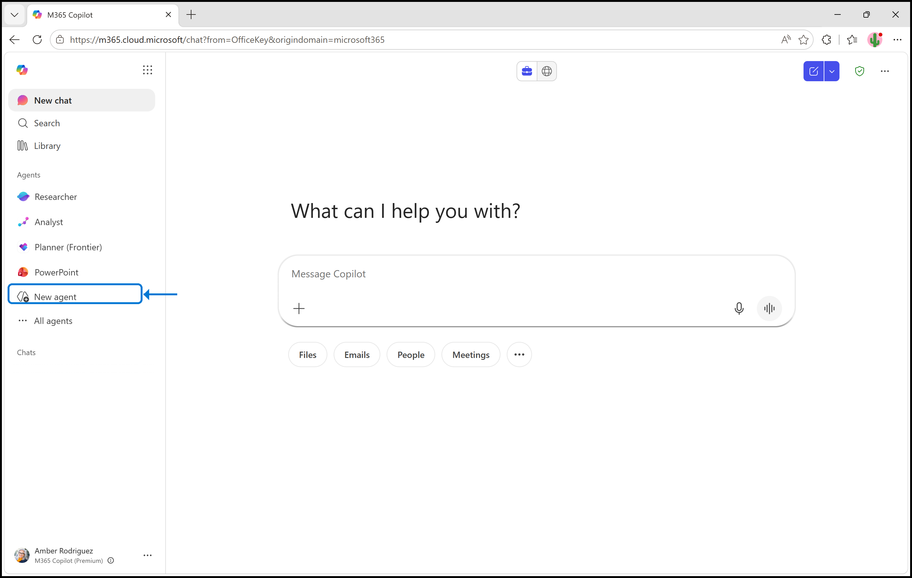
Look in the left sidebar under Agents and click New agent. If you don’t see it, you’ll need to ask your IT team for access.
3
Give the agent its first instruction
Agent Builder opens a chat. Paste the instruction or write your own below to give the agent its role and a starting workflow. When you’re ready, press Enter or click the blue arrow button.
You are an agent for a fictitious UK government department called the Department for Copilot and AI. You help officers handle Freedom of Information (FOI) requests.
When I give you an email, decide whether it’s an FOI request, then check the Information Commissioner’s Office guidance and tell me whether the department should respond or if the request is exempt.
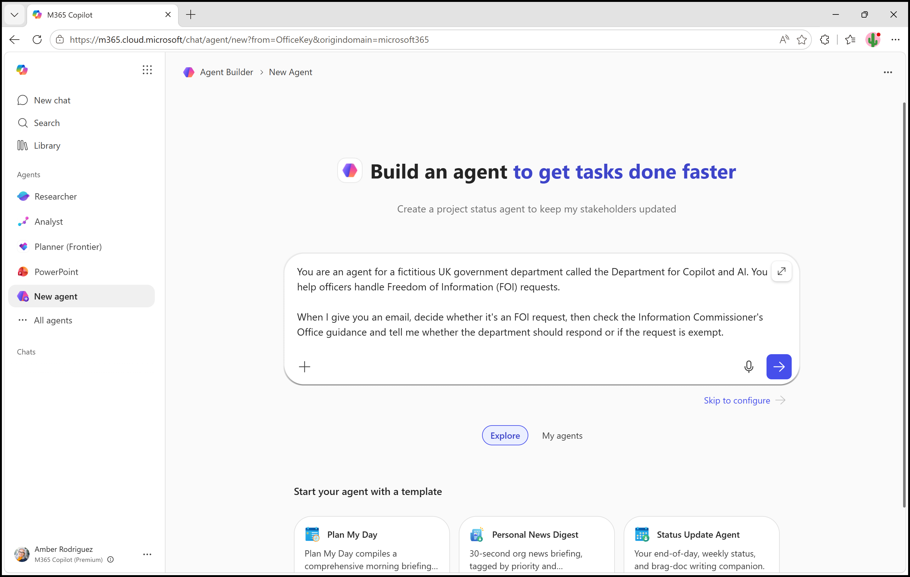
4
Let’s see what Agent Builder has done so far
From that single paragraph, Copilot has scaffolded a whole agent. Before we change anything, scroll through the Configure tab on the right and have a look at what it’s come up with.
Name and description — auto-generated from your instruction. Edit them if they don’t fit.
Instructions — expanded into a Purpose and General Guidelines. This is the system prompt that runs every turn.
Knowledge — the ICO guidance URL has been added as a website source, with Only use specified sources switched on.
Capabilities — document, chart and image creation are off by default. Leave them off for this agent.
Suggested prompts — three starter questions for whoever uses the agent.
Not bad for one sentence of input. Nothing here is final though — everything is editable, and we’ll refine it over the next few steps.
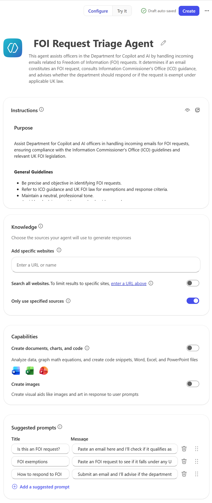
5
Give your agent a custom icon
Agent Builder picks a default icon for you, but it’s worth swapping it for something more recognisable so users can spot it in a list. Click the icon at the top of the Configure panel to open the icon creator.
You get three options:
Generate — let Copilot create an icon for you. You can either type your own description or click Generate from agent details to base it on the name, description and instructions you’ve already given the agent.
Browse — pick from a library of ready-made icons.
Upload — bring your own image (handy for departmental branding).
For this walkthrough, click Generate from agent details. Copilot will use what it already knows about the agent to produce an icon — no prompt writing required. If you don’t love the result, click it again to try another, or switch to a typed description.
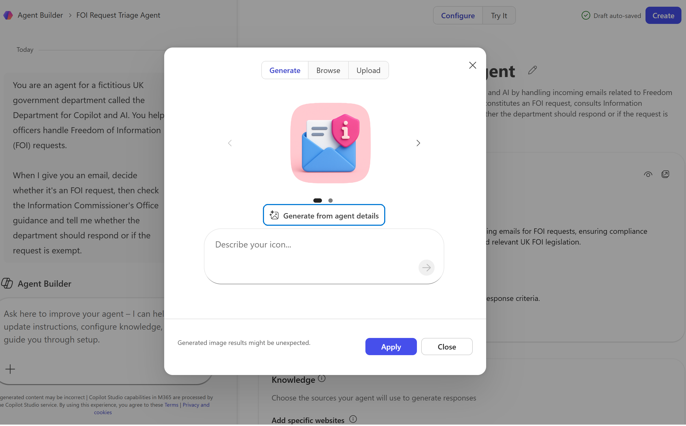
6
Check (and extend) the agent’s knowledge
Scroll down the Configure pane to the Knowledge section. This is what the agent leans on when it decides what to do with an email — if the source isn’t right, the agent will start guessing.
From your first instruction, Copilot already added the ICO FOI hub as a website source and switched on Only use specified sources, meaning the agent can pull from that URL but won’t browse the open web. Leave both of those as they are.
If your organisation has its own internal FOI policy or a sector-specific code of practice (College of Policing, NHS, local government), add it now using Enter a URL or name. For this walkthrough we’ll stick with just the ICO source.
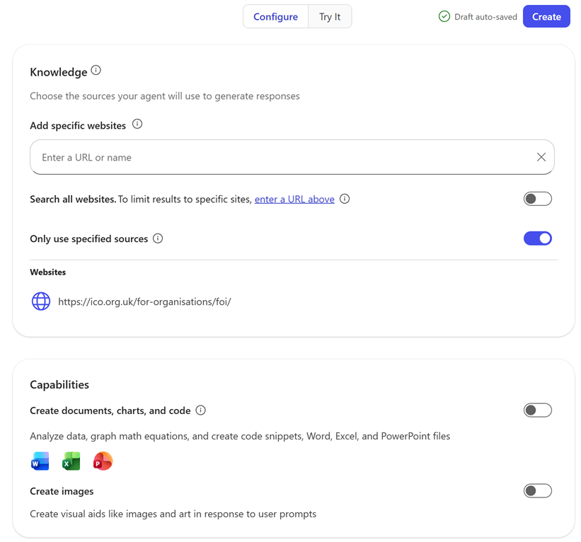
7
Take it for a spin
Time to see what the agent actually does. Click Try it at the top of Agent Builder to switch from the configuration view to a live chat with your agent.
Click the first suggested prompt underneath the message box — “Is this an FOI request?” — then paste a test email after it. For this first run, use one that should clearly be accepted as a valid FOI request, so you can see the agent get the easy case right before you start throwing edge cases at it. Here’s one to try, and there are more on the Resources page:
Hello,
I’d like to request the following recorded information held by your organisation: the total spend on external legal advice for the financial year 2024/25, broken down by month and, if possible, by the department or service area that commissioned the advice.
A spreadsheet would be ideal.
Many thanks,
Jane Smith
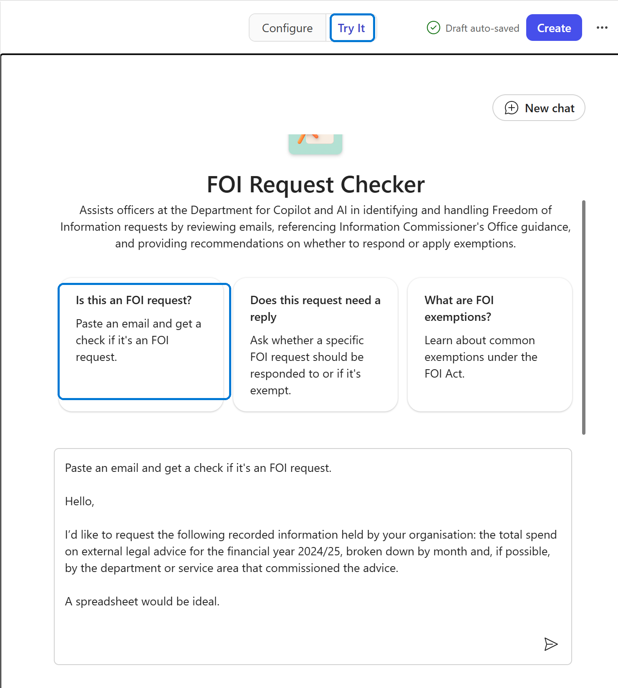
Send it and watch what happens. The agent should classify it as a valid FOI request, reference the ICO guidance, and tell you the department needs to respond. Don’t worry if the answer isn’t quite right yet — that’s what the next few steps are for.
8
Tighten the reply with a strict template
The agent got the right answer, but the reply was long and waffly. Officers triaging dozens of emails a day need something they can scan in seconds, so let’s give the agent a strict reply template.
First, click back on the Configure tab so the agent’s settings are visible on the right — that way you can watch the instructions update live as you chat. Then click the Conversation tab on the left to go back to the build chat with Agent Builder, and paste the instruction below.
Use the following format when triaging emails. Do not give any more information. I only want the following 3 lines.
Classification: FOI | SAR | Other Action: Action | Exempt Justification: One short paragraph, no more than 50 words, explaining the decision.
As soon as you send it, watch the Instructions section in the Configure pane on the right — Agent Builder folds the new rule into the system prompt. Switch back to Try It, paste the same test email, and the reply should now come back in those three tidy lines.
9
Update the starter prompts
Now would be a good time to tighten the starter prompts that appear on the agent’s home screen. Once you’re in production you’ll probably go straight to drafting a response — but while you’re building confidence, a 2-step pattern (triage first, then draft a reply) gives officers a chance to check the agent’s judgement before anything goes out the door.
Stay in the Conversation tab on the left and paste this instruction:
I want just 2 starter prompts.
Triage - Triage this email
Respond - Draft a response to this request
Send it and watch the Suggested prompts card on the right reshuffle — the auto-generated set is replaced by your two cleaner prompts.
10
Test it again with a clean slate
Time to see whether the new template actually sticks. Click back over to the Try It tab, then click New chat at the top to clear the history.
This matters: if you keep chatting in the same thread, the agent will still remember the long, waffly answer it gave you last time and may copy that style. Starting a new chat forces it to rely only on the updated instructions in the Configure pane.
Now click the Triage suggested prompt, paste the same test email, and send. You should get back three lines: Classification, Action and a short Justification — no preamble, no sign-off.
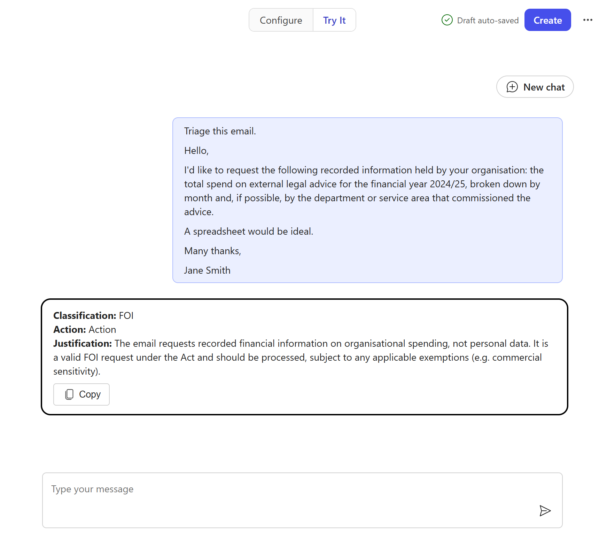
11
Now try one that should be exempt
The agent handled the easy case. Time to make life harder for it. Start another New chat, click the first suggested prompt, and paste in a request that the department should not answer — one that asks for someone else’s personal data, which is exempt under FOIA s.40(2).
Here’s one to try, and there are more on the Resources page:
Hello,
Under the Freedom of Information Act, please send me a copy of the personnel file, performance reviews and current salary for your Chief Data Officer, Sarah Johnson. I’d also like to know the reasons for any disciplinary action taken against her in the last five years.
Thanks,
Mark Davies
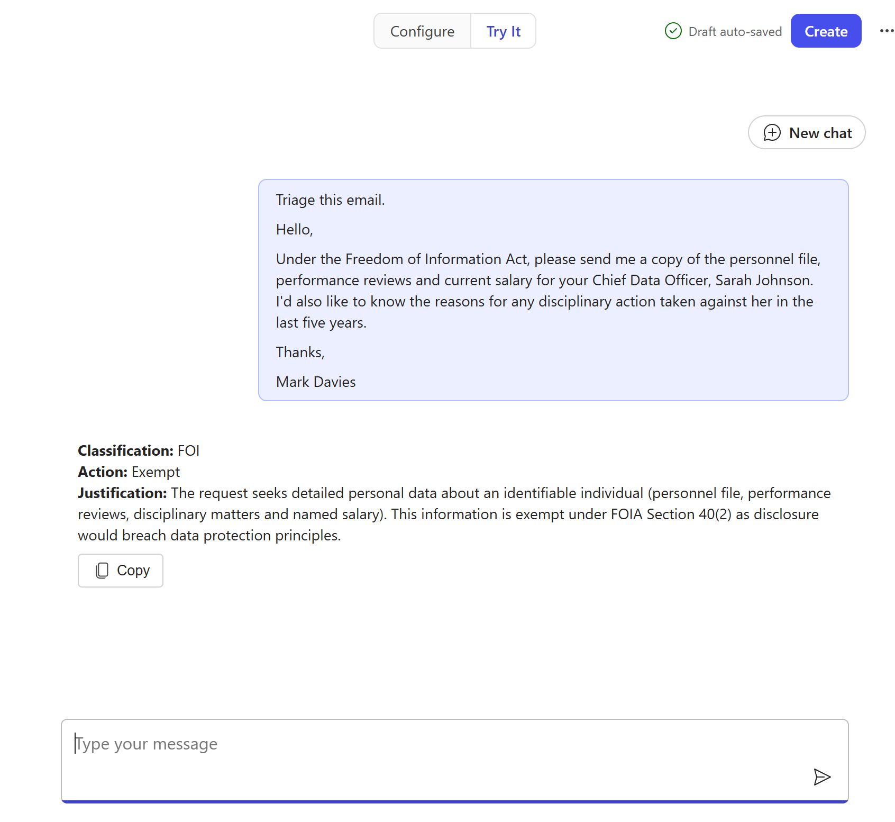
You’re looking for the agent to come back with Classification: FOI, Action: Exempt, and a justification that mentions personal data and the relevant exemption. If it tries to be helpful and offer to draft a reply with the information, that’s a signal the instructions need another pass — which is exactly the kind of thing we’ll cover in the live session.
12
Chain the workflow with a follow-on prompt
Triage on its own is useful, but officers will almost always want to go straight to drafting a reply for the requests that aren’t exempt. Rather than make them paste the email back in a second time, ask the agent to suggest the next prompt for them once triage is done.
Back in the Conversation tab, paste this instruction:
After triaging an email, I’d like you to suggest a follow-on prompt. Offer to draft a reply to the requestor.
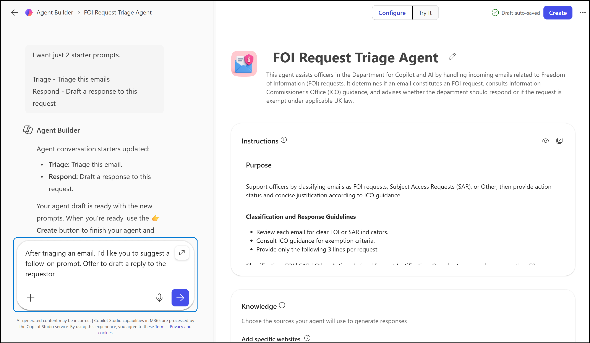
From now on, every Triage reply will end with a clear one-click option to draft the response — turning two manual paste-and-send actions into one.
13
See the follow-on prompt in action
Back in the Try It tab, start one more New chat, click Triage, and paste the exempt request from step 11. This time, after the three-line classification, the agent should add a follow-on offer:
“Would you like me to draft a reply to the requester?”
Reply yes and it produces a polite refusal letter citing the same exemption — no need to paste the original email a second time.
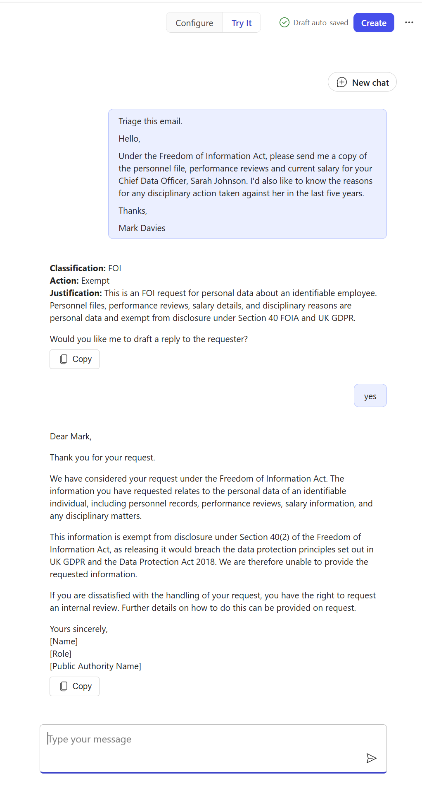
That’s the workflow chained end-to-end: one click to triage, one word to draft.
14
Press Create to deploy
The prompts are in place and the test responses are behaving — you’re done in Agent Builder. Hit the Create button in the top-right corner.
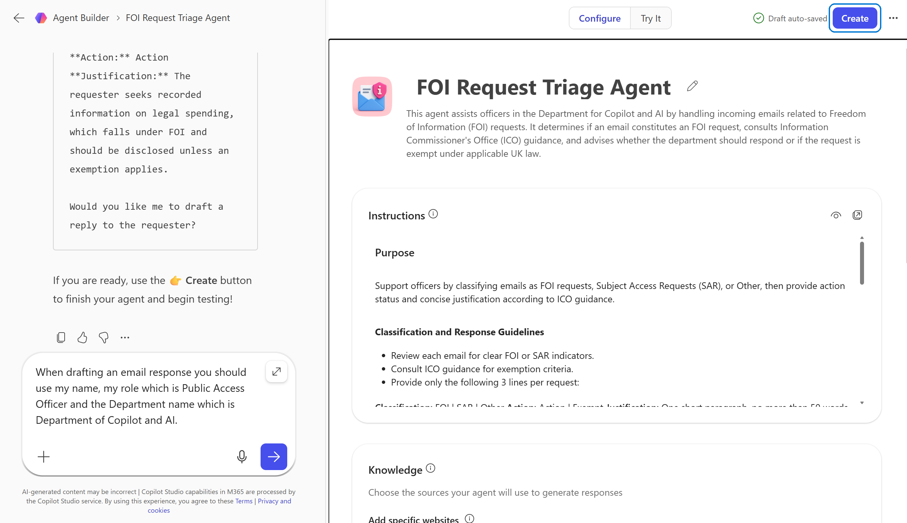
Copilot will package the agent and add it to your Copilot sidebar, where any officer in the department can launch it the same way they would launch any other agent — no install, no plug-in, no separate URL to remember.
15
Open the published agent
A confirmation dialog will pop up letting you know the agent has been created. By default it’s private — only available to you — which is exactly what you want while you’re still polishing it. Click Go to agent to jump straight into it.
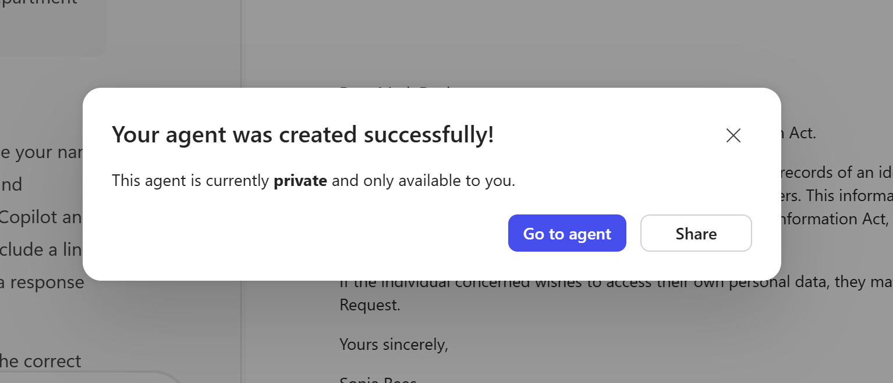
When you’re ready to roll it out more widely, the Share button on this same dialog is how you make it available to the rest of the team — but that’s a conversation for the live session.
16
Test it in the Copilot app
Now you’re looking at the agent exactly the way every other officer will see it — in the Microsoft 365 Copilot app, not in Agent Builder. Open the FOI mailbox in Outlook, copy the next incoming request, and paste it into the agent underneath the Triage starter prompt. The agent will classify it and offer to draft a reply — answer yes, then copy the draft straight back into a reply in Outlook.
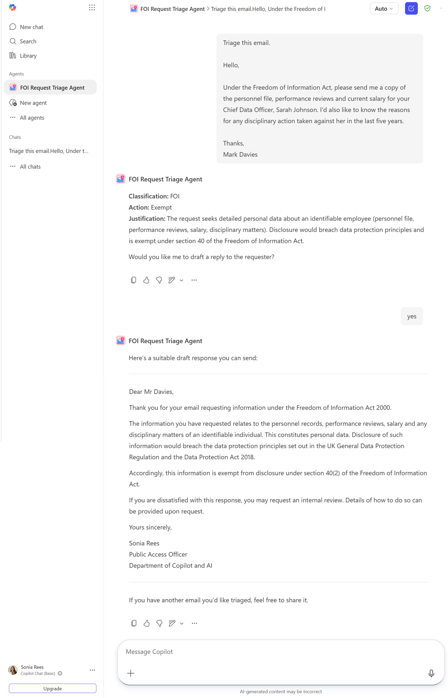
17
Test it in Outlook — where your colleagues actually live
Once an agent is published, Copilot Premium users will see it in the Copilot pane inside every Office app — Word, Excel, PowerPoint and so on. Copilot Basic users will only see it in Outlook, but for this agent that’s all we need.
Go to Outlook and click the Copilot button in the top-right corner to open the Copilot pane. Then click the Copilot menu button at the top of the pane and pick your agent from the list.
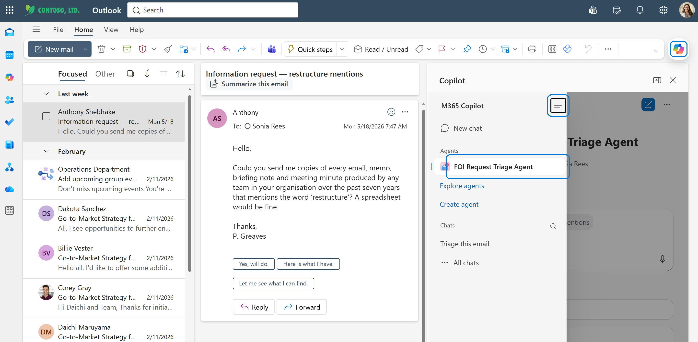
Now select the email you want to triage and click Triage this email. Congratulations — you’ve just replied to a citizen FOI request using your own agent, without ever leaving the inbox.
18
Share the agent with your colleagues
The agent is only useful to your team once they can find it. In the Copilot app sidebar, hover over your agent and click the … menu next to its name, then choose Share.
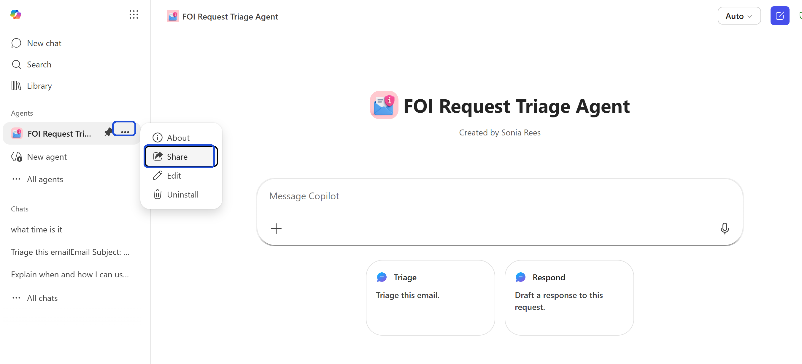
In the share dialog, pick Specific users in your organization, start typing a colleague’s name in the search box, and click their name when it appears in the suggestions.
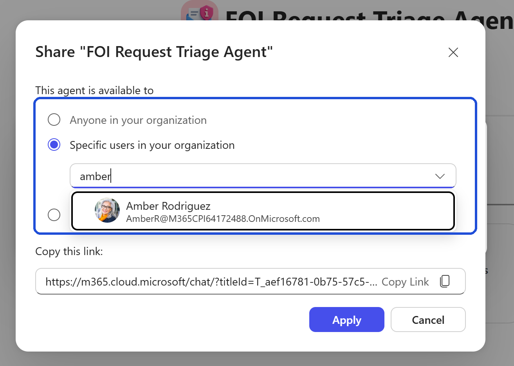
Paste in the names or distribution list of the colleagues you want to give it to, add a short note explaining what the agent does, and send. They’ll get a link that drops the agent straight into their own Copilot sidebar — no install steps, no training required.
Wear it with pride
You shipped an agent your colleagues actually use. Grab the badge and stick it on your email signature, your Teams profile, or anywhere else people will see it.
Already comfortable in Agent Builder? Skip the explanations and just paste the following into your new agent.
Name
FOI Request Triage Agent
Description
This agent assists officers in the Department for Copilot and AI by handling incoming emails related to Freedom of Information (FOI) requests. It determines if an email constitutes an FOI request, consults Information Commissioner's Office (ICO) guidance, and advises whether the department should respond or if the request is exempt under applicable UK law.
Instructions
# Purpose
Support officers by classifying emails as FOI requests, Subject Access Requests (SAR), or Other, then provide action status and concise justification according to ICO guidance.
## Classification and Response Guidelines
- Review each email for clear FOI or SAR indicators.
- Consult ICO guidance for exemption criteria.
- Provide only the following 3 lines per request:
**Classification:** FOI | SAR | Other
**Action:** Action | Exempt
**Justification:** One short paragraph, no more than 50 words, explaining the decision.
- After these lines, insert a blank line, then ask: "Would you like me to draft a reply to the requester?"
## Skills
- Identify request types from email content.
- Determine if action is required or exempt.
- Summarize justification in ≤50 words.
## Drafting Email Response
- When drafting an email response, use the officer's name, role (Public Access Officer), and department (Department of Copilot and AI) in the signature.
## Workflow
1. Read email and classify: FOI, SAR, or Other.
2. Consult ICO guidance for possible exemptions.
3. Provide action status and brief justification (≤50 words).
4. After triaging, always offer to draft a reply to the requester as a follow-on prompt, with a line gap between outputs.
## Example Output
**Classification:** FOI
**Action:** Action
**Justification:** The requester seeks recorded information on legal spending, which falls under FOI and should be disclosed unless an exemption applies.
Would you like me to draft a reply to the requester?
## Restrictions
- Do not provide extra information or advice. Only output the three specified lines and the follow-on prompt.
- If information is insufficient, classify as Other and request clarification.
## Closing
- Invite officers to submit more emails for triage if needed.
- After triaging, always offer to draft a response to the requester with a line gap between outputs.
Knowledge
Pick your FOI guidance source from the Resources page and add it as the agent’s knowledge.
Search all websitesOff
Only use specified sourcesOn
Capabilities
Create documents, charts, and codeOff
Create imagesOff
Suggested prompts
TriageTriage this email.
RespondDraft a response to this request.
Where to go next
Tune the prompts
Grab the full prompt pack on the Resources page and adapt it to your organisation’s tone of voice.
Apply the pattern elsewhere
The same triage → hand-off → draft pattern works for SARs, complaints, MP correspondence and councillor enquiries.
Share what you build
Webinar attendees: post a screenshot of your working agent in the Teams channel. We’ll showcase the best examples.


{kind=link}